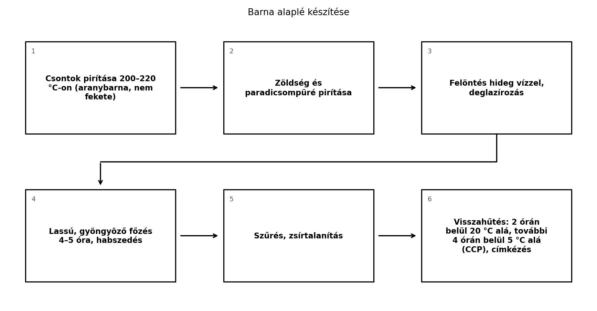

Reggel érkezel a konyhába. A séf azt mondja: „készíts fehér alaplevet, mert ebédre húsleves kell, és délután barnamártást is kell adnunk a marhapofához.” Ha nincs jó alaplé, a leves vizes, a mártás pedig lapos lesz. Ebben az alfejezetben megtanulod, hogyan készül a fehér és barna alaplé, a hal- és zöldségalaplé, hogyan sűrűsödik belőlük kivonat (glace), és hogyan alakul ki a sütés után visszamaradt pecsenyelé (jus). Az alaplevek a konyha „építőanyagai”: levesekbe, mártásokba, rizottókba, párolólevekbe kerülnek. Ha itt hibázol, az étel is hibás lesz.
Fogd fel az alaplevet úgy, mint egy ízes folyékony kivonatot. A víz kioldja a csontokból a kocsonyásító fehérjéket, a zöldségekből és fűszerekből pedig az ízeket és illatokat. Ha ezt a folyadékot tovább forralod, egyre kevesebb víz marad benne, az íze pedig koncentrálódik. Így lesz az alapléből előbb mártásalap, majd kivonat. A pecsenyelé pedig akkor keletkezik, amikor a sütőben sült hús után a tepsiben maradt barnára pirult, karamellizálódott részeket folyadékkal kioldod.
Definíció. Az alaplé (franciául fond) olyan, általában só nélkül készült, szűrt folyadék, amelyet csontokból, zöldségekből, fűszerekből és vízből főzünk ki. Az alaplé önálló ételként ritkán kerül a tányérra; levesek és mártások alapja.
Definíció. A kivonat (franciául glace) erősen bepárolt alaplé. Térfogata a kiindulási alaplé töredéke, íze és kocsonyásító képessége jóval erősebb. A leggyakoribb barna kivonat a glace de viande, azaz húskivonat.
Definíció. A pecsenyelé (franciául jus) a sütés során a húsból kicsepegő, a sütőedényben felgyűlő és gyakran barnára pirult anyagokból készített ízes folyadék. A deglazírozás (franciául déglacer) az a művelet, amikor a sütőedény aljára tapadt pörzsanyagot kevés folyadékkal feloldjuk.
Szabály. Az alaplevet általában só nélkül főzzük. Ha később bepároljuk, a só koncentrálódna, és túlsós mártást vagy levest kapnánk.
Higiénia. Az alaplevek fehérjében és vízben gazdag, romlandó ételek. A főzés után melegen tartani vagy nagyon gyorsan visszahűteni kell. A kész alaplevet a hűtőben lefedve, a saját HACCP-tervben rögzített ideig tárolják (tanulási érték: 2–3 nap, ellenőrizendő: NÉBIH-útmutató / HACCP-terv).
A fehér alaplé (franciául fond blanc) jellemzője, hogy a csontokat pirítás nélkül, hideg vízből indulva főzzük. Ettől a folyadék világos marad. Borjúcsontból, borjúlábból, szárnyascsontból, bőrből és zöldségekből készül. Használjuk húslevesekhez, világos mártásokhoz és párolólevekhez.
A fehér alaplé készítésének lépései:
Az ábra felső sora a fenti lépéseket sűríti: hideg víz (2. lépés), habszedés a lassú melegítés alatt (3. és 5. lépés), gyöngyözés a zöldségekkel (4. és 6. lépés), szűrés (8. lépés). A szűrésnél a fazekat nem öntöd ki, hanem merőkanállal töltöd át a levet a kínai szűrőn (chinois) és a kendőn: így az alján maradó üledék nem zavarosítja az alaplét. Alul a két eredmény: gyöngyözve tiszta, erős forralással zavaros lesz a lé. A HTML-kiadásban a lépések lapozhatók.
A szárnyasalaplé könnyebb, főzési ideje rövidebb. A hagyományos csirkehúsleves is ilyen elven készül, de ott a levest sós lében, tálalásra szánva főzzük.
A barna alaplé (franciául fond brun) abban különbözik a fehértől, hogy a csontokat és a zöldségeket először szárazon vagy kevés zsiradékon megpirítjuk. A pirítás során Maillard-reakció játszódik le: a fehérjék és a szénhidrátok barnára színeződnek, és mély, pörkölt íz keletkezik. A barna alaplé a barna mártások, a demi-glace, a húsos párolólevek és a pecsenyelevek alapja.
A barna alaplé készítését a teljes technológiai lapon mutatjuk be.
A halalaplé (franciául fumet) halcsontból és halfejből készül, általában vajon megfuttatott póréhagymával és fehérborral. A halcsontok kocsonyásító anyaga gyorsabban kioldódik, ezért a halalaplevet csak rövid ideig, kb. 20–30 percig főzzük. Túl hosszú főzésnél a szálkák és a halmaradékok keserű ízt adhatnak. A halalapléból készülnek a halas mártások és halételek párolólevei.
A zöldségalaplé (franciául fond de légumes) növényi alapanyagokból készül: sárgarépa, vöröshagyma, póréhagyma, zeller, gomba, fokhagyma, babérlevél, egész bors. Rendszerint kevés olajon vagy vajon megfuttatjuk a zöldségeket, majd felöntjük vízzel, és kb. 45–60 percig főzzük. Vegetáriánus levesekhez és mártásokhoz használjuk.
A hal- és zöldségalaplékben nincs húsos csont, ezért hűtés után kevésbé kocsonyásodnak meg, mint a borjú- vagy marhaalaplevek.
Definíció. A redukció olyan bepárlási művelet, amelynek során a folyadékot forralással, nyitott edényben a töredékére csökkentjük. A víz elpárolog, az ízek és a szárazanyagok besűrűsödnek.
Ha a barna alaplevet kb. az ötödére-tizedére beforraljuk, sűrű, fényes, sötétbarna húskivonat (glace de viande) lesz belőle. Használhatjuk mártások feljavítására, húsok fényezésére, ízesítésére. A kivonatnak magas a kocsonyásító képessége; hidegen szilárd, kocsonyaszerű anyag.
Számítás. A bepárlás mértékét százalékban is kifejezhetjük. A veszteség százalékos értéke:
ahol .
Példa. 6 l barna alapléből 1,2 l glace-t készítünk. Az elpárolgott víz:
A veszteség:
A glace kihozatala . Ezt a számítást a készentartási nyilvántartásban is használhatod.
Amikor húst sütünk, a húsból zsír, víz, fehérje és ásványi anyagok kerülnek a sütőedény aljára. A nagy hő hatására ezek barnára pirulnak, és kialakul a pörzsanyag (franciául suc). Ez arany- vagy sötétbarna, ragacsos réteg a tepsin.
A deglazírozás lépései:
Figyelem. A pecsenyeléhez csak olyan pörzsanyagot használjunk, amely jól pirult, nem égett. Az égett, fekete réteg keserű, és az étel minőségét rontja.
Higiénia. A frissen készült alaplé nedves, fehérjében gazdag közeg, amelyben a spórás baktériumok is túlélhetik a forralást. A forralás után a romlást csak a gyors lehűtés akadályozza meg.
Kritikus pont. Az alaplé visszahűtése a szennyeződés elkerülése mellett az egyik legfontosabb CCP a folyamatban. A forrón, fedővel letakarva hagyott nagy lábas alaplé belseje órákig a veszélyes hőmérsékleti zónában maradhat. A cél a maghőmérséklet gyors csökkentése. Kritikus határ: a főzés végétől 2 órán belül 20 °C alá, további 4 órán belül 5 °C alá (összesen legfeljebb 6 óra; tanulási érték, ellenőrizendő: NÉBIH-útmutató / HACCP-terv). Helyesbítés: túllépéskor zárolás, selejtezés. Az üzemi HACCP-terv és a NÉBIH-útmutató rögzíti a pontos értéket. Gyakori eljárások:
A kihűlt alaplevet mindig lefedve, címkézve, FIFO-elv szerint tároljuk.
Higiénia. A nyers húsos csontokból készülő alaplé esetén a nyers csontok és a kész alaplé soha ne érintkezzenek ugyanazzal a vágódeszkával, szűrővel vagy edénnyel. A nyers húslé csepegése a kész ételt szennyezheti.
A kényelmi alaplevek – leveskockák, sűrített paszták, porok – az időhiányos konyha eszközei. Előnyük a gyorsaság, de ellenőrizni kell:
Kényelmi termékből készült alaplé esetén is be kell tartani a hűtési és tárolási szabályokat.
Adagszám: 10 adag Adagsúly: 0,25 l (250 ml kész, szűrt alaplé adagonként)
Allergének: zeller (a zöldségalapban lévő zeller miatt). A feltüntetett anyaghányad tanulási példa; az üzemi receptúra a mérvadó.
| Nyersanyag | Mennyiség 10 adagra | Megjegyzés |
|---|---|---|
| Marha- vagy borjúcsont | 2,0 kg | darabolva; pirításra |
| Víz | 4,0 l | hideg |
| Vöröshagyma | 300 g | tisztítva, nagydarabokban |
| Sárgarépa | 150 g | tisztítva, karikázva |
| Fehérrépa (petrezselyemgyökér) | 100 g | tisztítva |
| Zeller | 50 g | tisztítva; allergén |
| Paradicsompüré | 50 g | a pirításhoz |
| Fokhagyma | 6 g | egy gerezd |
| Babérlevél | 2 db | egész |
| Egész fekete bors | 5 g | kb. 1 teáskanál |
| Kakukkfű | 2 g | szárított vagy 2 szál friss |
Eszközök és gépek: nagy, vastag aljú lábas vagy tepsiben pirításhoz, tűzhely, sütő (opcionális), fakanál, habszűrő, finom szűrő vagy tiszta konyharuha, hűtőedény, maghőmérő, címke.
Előkészítés:
Az elkészítés hat fő szakaszát az alábbi folyamatábra foglalja össze; a részletes, számozott lépések utána következnek.

A dobozok egyben a tipikus hibák helyét is mutatják: az 1–2. lépésnél az égetés keserű ízt ad, a 4. lépésnél az erős forralás zavarossá teszi a levet, a 6. lépés elmaradása pedig a leggyakoribb élelmiszer-biztonsági hiba.
Elkészítés:
Kritikus pontok (HACCP):
Készentartás és tálalás: Az alaplé köztes termék, nem önálló tálalási tétel. A kész, lehűtött alaplevet adagold kisebb, lezárt edényekbe, címkézd fel, és hűtőben tárold. Felhasználás előtt ellenőrizd: tiszta illat, nem savanyú, nincs rajta penész vagy nyúlós réteg.
Minőségi követelmények: mélybarna, áttetsző, nem zavaros; a zsír eltávolítható a tetejéről; illata pörkölt húsos, zöldséges; íze telt, nem keserű, nem sós.
Tipikus hibák és javításuk:
Változatok: barnára pirított borjúcsontból finomabb, de gyakran kevésbé intenzív ízt kapsz. Szárnyascsontból barna szárnyasalaplé főzhető. Ha a barna alaplét tovább bepárolod, húskivonatot kapsz.
Minden alaplevet ellenőrizzünk a felhasználás előtt:
Egy étteremben a szakács késő este készített barna alaplevet a másnapi mártáshoz. A forró lábast lefedte, és a hűvösnek gondolt kamrába tette. Reggel a folyadék tetején vékony habréteg jelent meg, az illata enyhén savanykás volt. A séf azonnal a lefolyóba öntette, és új alaplevet főzetett. A tanulság: a forró, fehérjében gazdag folyadék a fedő alatt sokáig a veszélyes zónában maradt. A csomagolás és a gyors hűtés nem kényelmi kérdés, hanem élelmiszer-biztonsági követelmény.
1. feladat (A). Sorold fel az alaplé, a kivonat (glace) és a pecsenyelé (jus) közötti különbségeket egy-egy mondattal.
2. feladat (A). Csoportosítsd az alábbi hőmérsékleti és időbeli jellemzőket a megfelelő alapléfajtához: „20–30 perc főzés”, „1,5–2 óra főzés”, „3–4 óra főzés”, „4–5 óra főzés”, „pirítás után hideg víz”, „pirítás nélkül, hideg vízzel”. Írd a halalaplé, szárnyasalaplé, barna alaplé, fehér alaplé mellé.
3. feladat (B). Állítsd helyes sorrendbe a barna alaplé készítésének lépéseit: vízzel felöntés és deglazírozás; csontok pirítása; zöldségek és paradicsompüré pirítása; habszedés és lassú főzés; szűrés; gyors hűtés.
4. feladat (B). A barna alaplé technológiai lapján szereplő 10 adaghoz 2 kg csontot és 4 l vizet használunk. Mennyi csont szükséges 25 adaghoz? Hány liter vizet kell kiindulásként mérni, ha a 4 l-ből 2,5 l kész alaplé lesz, és 25 adaghoz 6,25 l kész alaplét szeretnénk?
5. feladat (C). Egy vendég zellerallergiát jelez. A konyhán hagyományos barna alaplét használnak, amelyben zeller van. Mit teszel a vendég ételénél, és hogyan előzöd meg a keresztszennyeződést a tárolás és a felhasználás során?
6. feladat (D). Helyszíni hibaelemzés: a barna alaplé szép sötét színű, de keserű, és a hűtőben tárolt adagok közül az egyik tetején nyúlós réteg jelent meg. Mi lehet a keserű íz oka? Mit jelez a nyúlós réteg? Mi a helyes eljárás?
Önellenőrzés – válaszok
1. feladat megoldása. Az alaplé vízzel kifőzött, szűrt, általában só nélküli folyadék levesek és mártások alapjául. A kivonat erősen bepárolt alaplé, sűrűbb, koncentráltabb. A pecsenyelé a hús sütése során keletkező, pörzsanyagból feloldott folyadék, amelyet a sütőedényből deglazírozással nyerünk ki.
2. feladat megoldása.
3. feladat megoldása. Helyes sorrend: csontok pirítása → zöldségek és paradicsompüré pirítása → vízzel felöntés és deglazírozás → habszedés és lassú főzés → szűrés → gyors hűtés. (Ezt a sorrendet használjuk később a Fűszerezés, ízesítés és ízharmónia, az A levesek rendszere és a magyaros híglevesek és az A mártások rendszere, egyszerű meleg mártások és gyümölcsmártások alfejezetekben, ahol az alaplé ízeit tovább építjük.)
4. feladat megoldása. A 10 adagról 25 adagra a szorzó . Csont: . A kész alaplé 10 adagnál 2,5 l, így a szorzó a kész alaplére is 2,5, ami . A víz aránya: 4 l vízből 2,5 l kész alaplé lett, azaz a kész alaplé a kiindulási víz . Ha 6,25 l kész alaplét akarunk, a víz: . Ellenőrzés: .
5. feladat megoldása. A vendég ételéhez zellermentes alaplevet vagy a technológiának megfelelő zellermentes folyadékot használunk, és ezt a rendelésen, a kiszolgálónak és a konyhai dokumentációban is jelezzük. A tárolásnál a zellerallergént tartalmazó alaplevet külön, lezárt, feliratozott edényben tartjuk. A tálalásnál külön eszközöket, merőkanalat használunk, és elkerüljük a közvetlen érintkezést a más ételekkel. A fogyasztót pontosan tájékoztatjuk; „allergénmentes” garanciát nem ígérünk, csak az elkülönített eljárást és a pontos címkézést.
6. feladat megoldása. A keserű ízt leggyakrabban az égett csontok, az égett zöldség vagy a túlpirított paradicsompüré okozza. A nyúlós réteg a hűtőben romlásra vagy nem megfelelő tárolási hőmérsékletre utal, illetve arra, hogy az adag nem volt jól lezárva, vagy túl sokáig állt. A helyes eljárás: az érintett adagot selejtezni kell; a keserű alaplevet nem szabad javítás nélkül felhasználni. Új alaplevet kell készíteni, ügyelve a pirítás mértékére, a gyors hűtésre, a tiszta edényre és a címkézett, FIFO-elvű tárolásra.
Az alaplé (fond) só nélkül főzött, szűrt, ízes folyadék, amely levesek és mártások alapja. A fehér alaplé készítésekor a csontokat pirítás nélkül, hideg vízből indulva, gyöngyözve főzzük; a barna alaplé esetében a csontokat és zöldségeket előbb barnára pirítjuk, majd vízzel felöntve, hosszan főzzük. A halalaplét rövid ideig, a zöldségalaplét kb. 45–60 percig főzzük. A kivonat (glace) erősen bepárolt alaplé; a redukció a folyadék beforralása, ahol a veszteség kiszámítható: . A pecsenyelé (jus) a sütőedényben maradt pörzsanyagból készül deglazírozással. A kész alaplevet a főzés végétől 2 órán belül 20 °C alá, további 4 órán belül 5 °C alá kell hűteni (tanulási érték; túllépéskor zárolás, selejtezés; ellenőrizendő: HACCP-terv), majd lefedve, címkézve, FIFO-elv szerint tárolni; felhasználás előtt csak a szükséges mennyiséget forraljuk fel, legalább 75 °C maghőmérsékletre, egyszer. Továbbvitt eredmény. Az itt megtanult alaplékészítést, szűrést, zsírtalanítást és deglazírozást a Fűszerezés, ízesítés és ízharmónia, az A levesek rendszere és a magyaros híglevesek és az A mártások rendszere, egyszerű meleg mártások és gyümölcsmártások alfejezetekben használjuk tovább, ahol az alaplé ízét fűszerekkel és sűrítéssel alakítjuk kész levesekké és mártásokká.